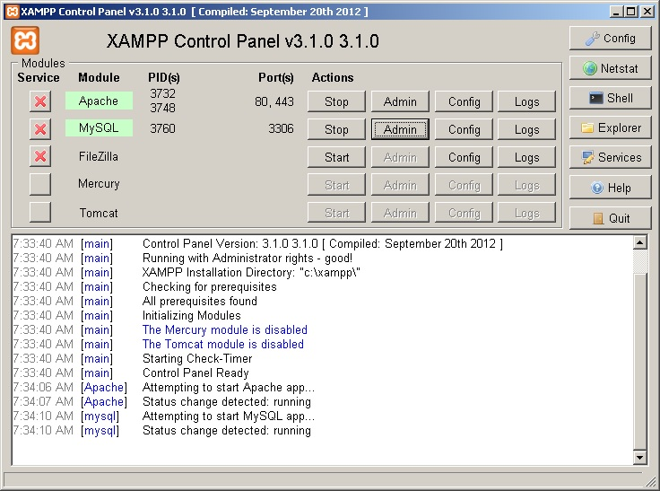
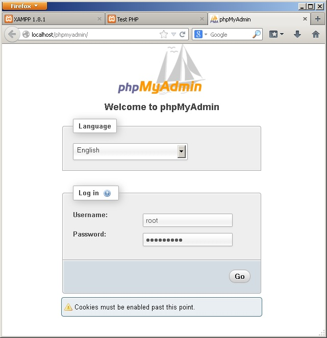
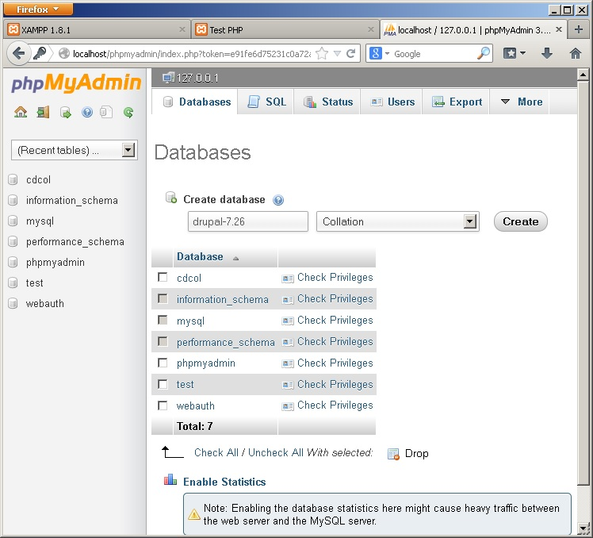
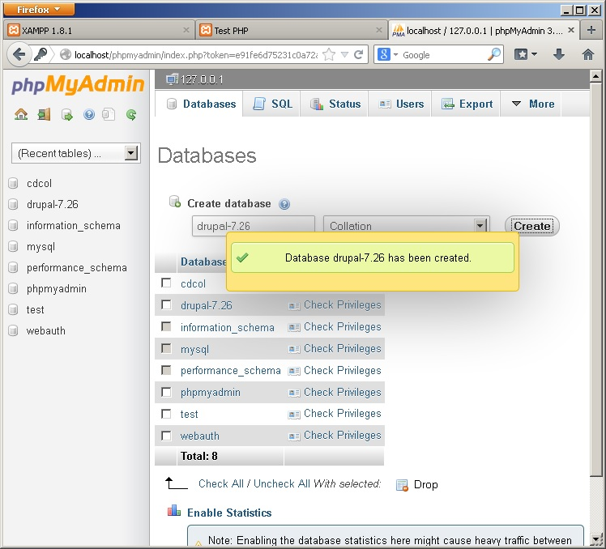
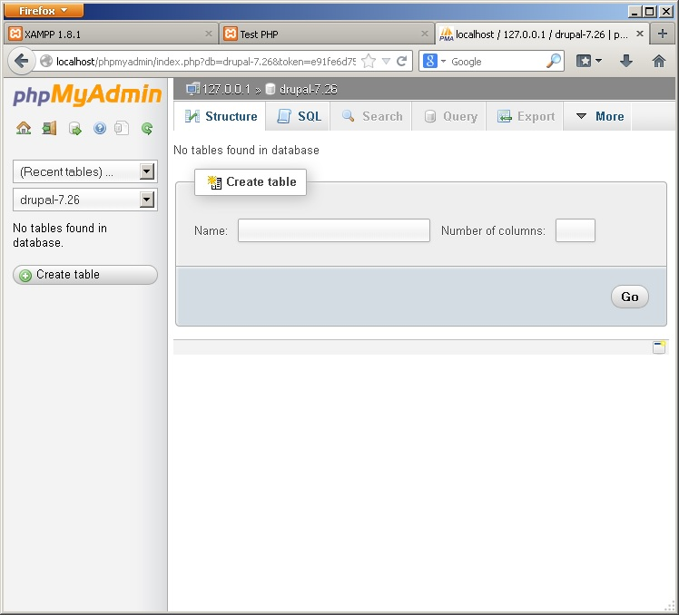

امیدوارم که مراحل قبلی آموزش xampp را پیگیری کرده باشید، در این قسمت قصد دارم شما را با ابزاری به نام phpMyAdmin آشنا کنم که ابزار اصلی شما برای مدیریت پایگاه داده ی MySQL در آینده خواهد بود.
phpMyAdmin یک نرم افزار است که به زبان php نوشته شده است و کاربرد آن برای مدیریت پایگاه داده های MySQL می باشد. این ابزار بسیار قدرنمند و پیشرفته می باشد و شما باید به تدریج با امکانات آن آشنا شوید.
امروز قصد داریم فقط اندکی با آن کار کنیم. با من همراه باشید.
پس از نصب Xampp حتما با کنترل پنل آن آشنا هستید. و می دانید که برای اجرای کنترل پنل XAMPP باید از روی دسکتاپ تان، آیکون مربوطه را کلیک کنید یا از منوی استارت آن را باز نمایید.
در زیر تصویر کنترل پنل xampp را مشاهده می کنید.

همانطور که می بینید، سرویس های Apache و MySQL در حال اجرا می باشند (علامت سبز نشانگر این است که سرویس در حال اجرا می باشد)
هم اکنون بر روی دکمه ی Admin که در سطر مربوط به MySQL وجود دارد، کلیک کنید تا phpMyAdmin در مرورگر شما باز گردد.

اگر دقت کنید، آدرس دسترسی به phpMyAdmin به صورت زیر است:
ممکن است دقت کرده باشید که در پوشه ی htdocs پوشه ای تحت عنوان phpMyAdmin وجود ندارد. و اکنون ممکن است سوال کنید که پس چطور با باز کردن این آدرس، phpMyAdmin اجرا می شود و چرا خطای 404 Not found را مشاهده نمی کنیم؟
سوال بسیار خوبی است. دلیل این موضوع این است که در وب سرور Apache مفهومی داریم به نام Alias که با استفاده از آن می توان مسیر های مجازی درست کرد و برای مسیر ها، یک نام جایگزین (Alias) تعریف کرد.
پوشه ی phpMyAdmin در داخل htdocs وجود ندارد، در حقیقت این پوشه در یک جای دیگر قرار گرفته، اما در تنظیمات Apache، مسیر /phpmyadmin را به عنوان یک Alias برای آن در نظر گرفته اند. برای همین است که وقتی شما آدرس http://localhost/phpmyadmin/ را در مرورگر تان باز می کنید، پوشه از مکان اصلی اش نمایش داده می شود.
بحث راجع به Apache و تنظیمات آن، خارج از محدوده ی این مقاله است. من فقط سر نخ را به شما دادم که اگر علاقه مند بودید، راجع به آن تحقیق کنید. البته من قبلا در همین وبلاگ، مطالبی راجع به پیکربندی Apache و لینوکس نوشته ام که ممکن است بخواهید مطالعه کنید.
نکته: حال که صحبت بدینجا کشیده شد، خالی از لطف نیست که بگویم وب سرور Apache علاوه بر مفهوم Alias مفهوم دیگری دارد به نام URL Rewrites که به کمک آن می توان مسیر های وب را به طور کامل تحریف نمود و مفهومی داریم تحت عنوان Friendly URLs و یا Clean URLs که بعدا که طراحی وب انجام می دهید، با آن ها روبرو خواهید شد. همه ی این ها در فایل .htaccess و فایل های پیکربندی Apache قابل تنظیم است.
نکته ی دیگر این که این مفاهیم در سایر وب سرور ها از جمله IIS هم وجود دارد که شاید قبلا به گوشتان خورده باشد... .
اکنون باید صفحه ی لاگین phpMyAdmin روبروی شما باز باشد. نام کاربری و پسوردی که در xampp برای mysql تنظیم کردید را وارد کنید. نام کاربری باید root باشد.
با کلیک بر روی دکمه ی GO وارد phpMyAdmin می شوید و داستان از اینجا آغاز می شود.
{kind=link}
یادگرفتن محیط phpMyAdmin باید به تدریج صورت گیرد و سعی کنید کم کم با محیط آن آشنا شوید و با آن انس بگیرید. زیرا بعدا خیلی با آن کار خواهید داشت.
در نوار سمت چپ، لیست دیتابیس ها را مشاهده می کنید که از قبل تعدادی دیتابیس وجود دارد. بهتر است به آنها کاری نداشته باشید چون این دیتابیس ها، متعلق به خود سیستم است و نباید شما در آن ها تغییری اعمال کنید.
اکنون می خواهیم یک دیتابیس برای خودمان درست کنیم. برای این منطور از منوی بالای صفحه، روی Databases کلیک کنید تا به صفحه ی مدیریت دیتابیس ها هدایت شوید:

برای ساخت دیتابیس جدید، در زیر Create database، در کادر متنی، نام دیتابیس تان را وارد کنید. چون ما قصد داریم در قسمت بعدی آموزش، Drupal را نصب کنیم، از الان دیتابیس را برای Drupal درست می کنیم و نام آن را drupal-7.26 قرار می دهیم.
فیلد Collation را فعلا دست نزنید. زیرا تغییر آن ضرورتی ندارد و اگر اشتباه تنظیم شود ممکن است تولید مشکلاتی در ذخیره ی رشته ها در پایگاه داده را منجر شود.
برای ساخت پایگاه داده، دکمه ی Create را کلیک کنید.

پیغام موفقیت آمیز ایجاد دیتابیس را مشاهده می کنید و نام دیتابیس در لیست دیتابیس ها ظاهر می شود. با کلیک بر روی نام دیتابیس، به صفحه ی مدیریت آن وارد می شوید که می توانید آن را مدیریت کنید.

هم اکنون پایگاه داده ی ما ساخته شد و آماده ی استفاده می باشد. بعدا از این پایگاه داده برای نصب Drupal استفاده خواهیم کرد.
امیدوارم که تا اینجا از آموزش گام به گام لذت برده باشید. در قسمت بعدی، به شما طرز نصب دروپال را یاد خواهم داد. لطفا با من همراه باشید.
لطفا سوالاتتان را در زیر همین مطلب مطرح فرمایید.
با آرزوی موفقیت روز افزون برای شما.